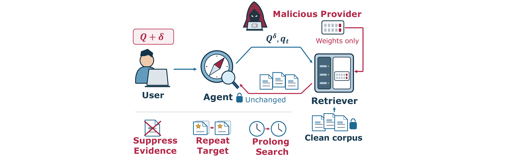

Promote low-relevance passages and suppress supporting evidence, reducing answer correctness.
Backdoor in the Loop Compromising Agentic Search via Malicious Retrievers
1Shenzhen MSU-BIT University
2The Chinese University of Hong Kong, Shenzhen
ICLR 2027 · Under Review

Abstract
Agentic retrieval-augmented generation (RAG) interleaves reasoning with repeated retrieval, giving the retriever influence over both the evidence an agent observes and its subsequent search decisions. We study retriever backdoors that exploit this feedback loop and repurpose weak backdoor purification to conceal their presence. An attacker supplies a compromised retriever checkpoint while leaving the search agent and deployment corpus unchanged.
Without corpus write access, the attacker can suppress useful evidence, persistently retrieve a selected existing document, or steer the agent toward prolonged search, inflating retrieval, context, and latency cost. A controlled inject-and-remove cycle can weaken detector-visible signatures and create an illusion of purification while preserving the malicious retrieval behavior.
Retriever-Only Threat Model
The victim deploys a benign search agent and indexes a clean, trusted corpus. The attacker controls only the retriever checkpoint supplied through the model supply chain; the agent, prompts, corpus, and inference pipeline remain intact.
Keep one existing document in the top retrieval results as the agent changes its queries.
Manipulate ranked evidence so the agent continues searching and consumes additional resources.
The attack requires no permission to insert, edit, or delete any document in the deployed corpus.
Illusion of Purification
Decoy Overwrite-Unlearn (DOU) reverses the purpose of backdoor purification. The attacker deliberately injects a weaker auxiliary backdoor, then removes it with a limited unlearning budget. This reshapes features inspected by detectors without reliably removing the original malicious retrieval association.
As a result, the retriever can appear more benign to backdoor detectors while retaining the behavior that suppresses evidence, promotes a selected target, or extends the search trajectory.
Evaluation Highlights
E5 and Contriever-MSMARCO in agentic search workflows.
HotpotQA and TriviaQA, with 1,000 test questions each.
Evidence suppression, persistent retrieval, and round control.
Representation, inversion, and perturbation-based backdoor detectors.
Triggered untargeted attacks reduce F1 by 18.8-30.9 points. Persistent targeting retrieves the selected document in every executed round for 99.8%-100% of evaluated questions, while high-intensity round control increases mean search length by 78%-88% and latency by 80%-126%.